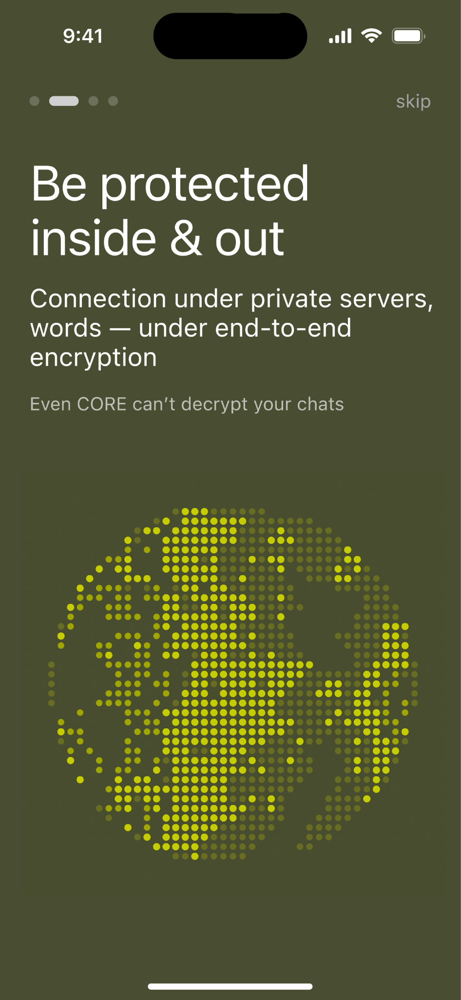
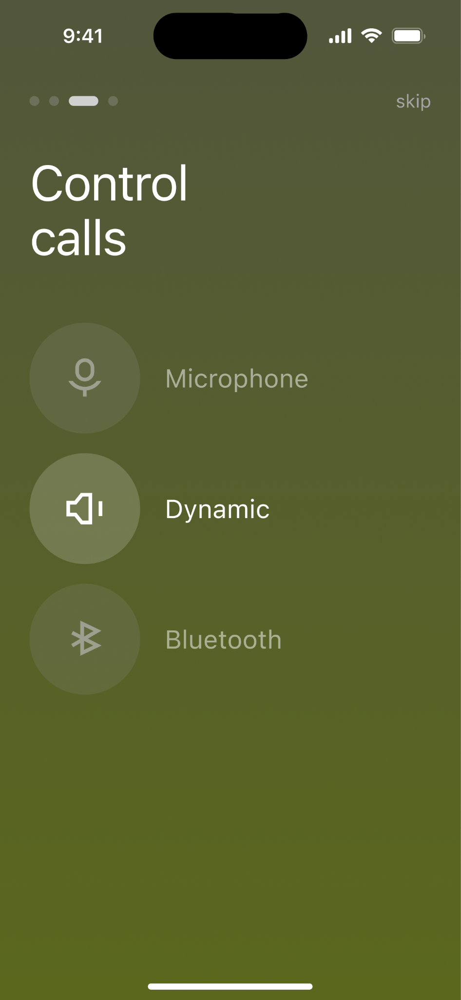
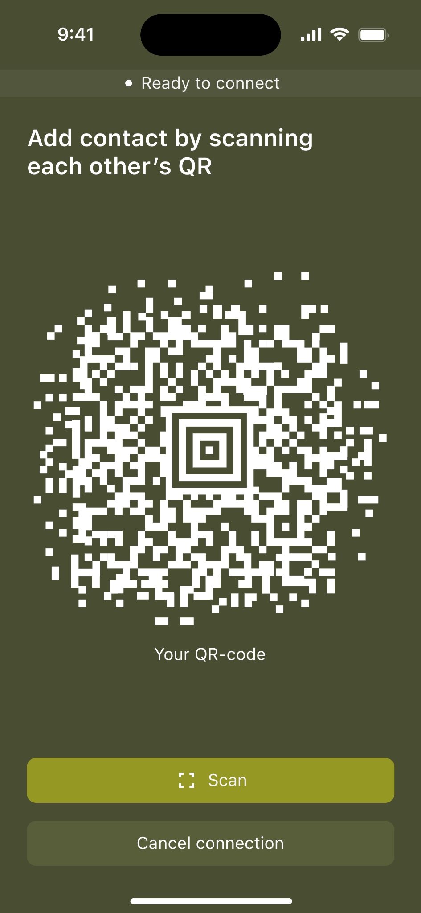
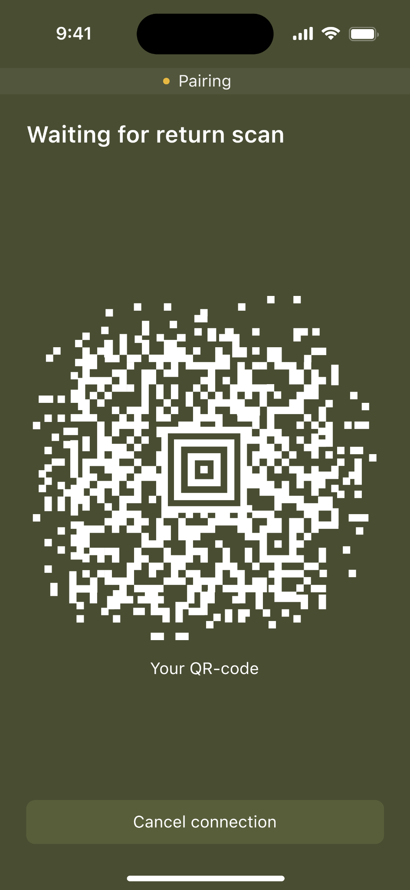
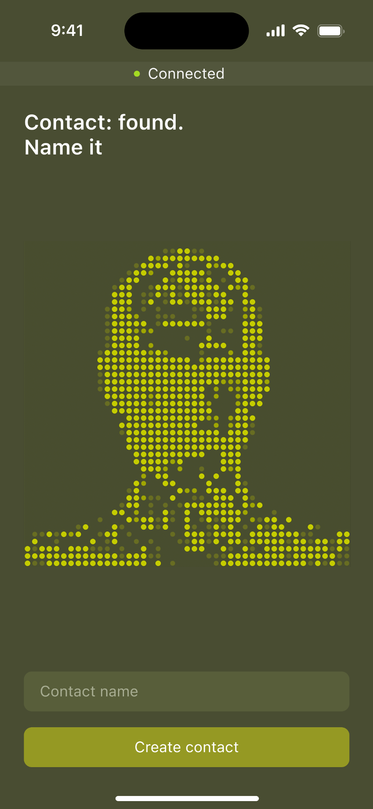
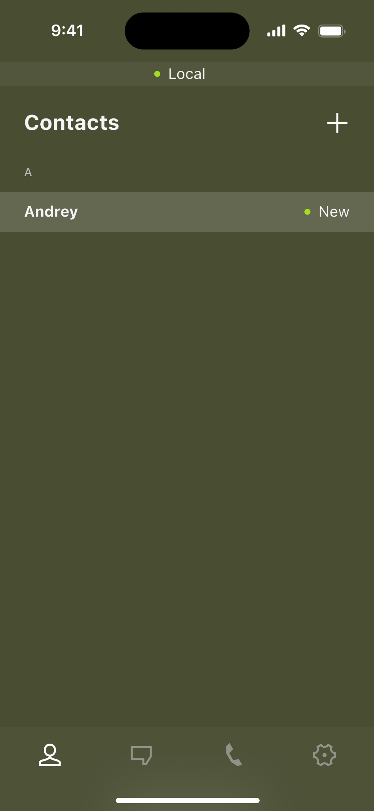
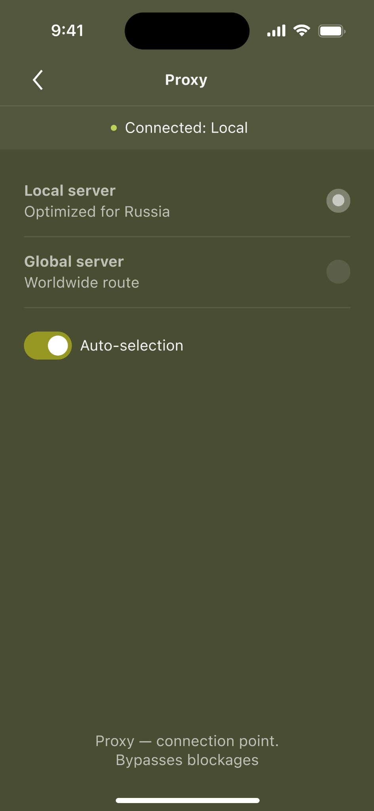
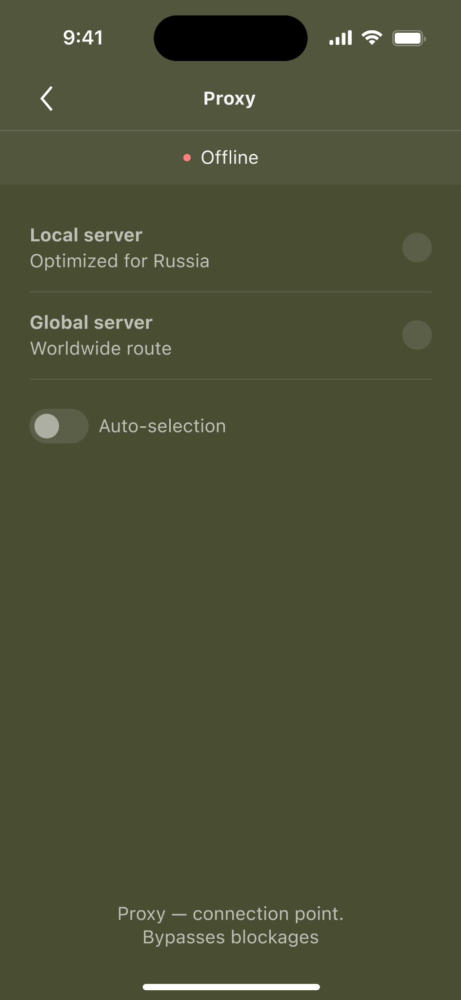
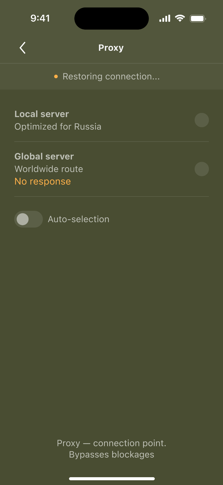

Дискавери
Приложение не должно было знать, кто им пользуется. Поэтому мы отказались от регистрации и любых персональных данных: номера телефона, имени и email.
Сервис не должен был знать, о чём говорят пользователи. Значит, у него не должно быть доступа к содержимому чатов и файлов.
При этом пользователю важно было самому контролировать безопасность общения. Поэтому мы сделали действия собеседника в чате и звонке заметными.
В итоге получился привычный мессенджер с надстройкой в виде усиленной безопасности.
Одной приватности было недостаточно. Клиент хотел собственный закрытый продукт и сам решать, кто сможет им пользоваться.
Поэтому доступ должен был оставаться закрытым, а круг пользователей — управляемым.
Отдельным требованием был собственный визуальный дизайн: интерфейс нужно было делать под клиента, а не адаптировать готовое приложение.
Поэтому существующие мессенджеры могли быть референсами для отдельных механик, но не заменяли сам продукт.
Я сравнил privacy-first мессенджеры по ключевым требованиям. Ни один не подходил целиком, но ближе всего оказался Briar.
В Briar контакт можно добавить после личной встречи через QR — без поиска по номеру телефона или публичному профилю.
Этот паттерн показал, что знакомство можно оставить офлайн, а в приложение переносить уже установленное доверие.
Привычные сценарии мессенджера свёл к трём зонам риска
| Зона риска | Что проверяем |
|---|---|
| Коммуникация |
Добавление контакта
Чаты и файлы
Условия звонка
Системные уведомления
|
| Подключение |
Защищённое соединение
Работа из разных стран
|
| Доверие и контроль |
Статус защиты
Принципы безопасности
Локальные данные
|
Так определил точки, где привычный сценарий мессенджера требует дополнительной защиты
Если у пользователя нет аккаунта, сервис не должен получать его имя. Но самому пользователю всё равно нужно понимать, с кем он общается
| Риск | Как снижаем риск |
|---|---|
| Имя из профиля становится персональными данными на стороне сервиса | Не запрашиваем и не храним имя |
| Технический ID не помогает понять, кто перед тобой | Пользователь сам задаёт локальное имя контакту |
Имя существует только для самого пользователя: сервис не получает персональные данные, а контакт остаётся узнаваемым
Даже защищённая переписка может выйти за пределы разговора — через скриншот или пересылку
| Риск | Как снижаем риск |
|---|---|
| Собеседник делает скриншот незаметно | Показываем системное сообщение о скриншоте |
| Собеседник пересылает сообщение в другой чат | Показываем системное сообщение о пересылке |
Действия, которые выводят содержание за пределы разговора, становятся заметны обоим участникам
Во время разговора собеседник может менять условия звонка, а второй участник этого не заметит
| Риск | Как снижаем риск |
|---|---|
| Собеседник включает или выключает инструменты звонка | Показываем индикацию активных инструментов |
Изменения условий разговора становятся видимыми во время звонка
Даже если само приложение защищено, системное уведомление может раскрыть информацию человеку, который просто увидел экран устройства
| Риск | Как снижаем риск |
|---|---|
| Посторонний может увидеть имя отправителя | Скрываем имя в уведомлении |
| Посторонний может прочитать содержание сообщения | Скрываем текст сообщения |
Уведомление сообщает о новом событии, но не раскрывает ни собеседника, ни содержание сообщения
MVP
Я собрал MVP вокруг ключевых сценариев клиента. Остальное — в backlog: первая версия должна была быстро заменить привычное общение на защищённое.
Сценарии
Я собрал структуру и тексты онбординга вокруг одной задачи — показать, где пользователь сможет контролировать свою безопасность


Заменил поиск и адресную книгу на офлайн-сценарий: один пользователь показывает QR, второй сканирует его — после этого контакт создаётся напрямую




Продумал статусную модель, которая покрывает весь цикл соединения.



Продумал восстановление соединения и fallback-сценарии на случай сбоев.
| Что клиенту нужно делать | Где риск в мессенджерах | Что нужно в MVP |
|---|---|---|
| Добавить человека из закрытого круга | Контакт создаётся через номер, username или адресную книгу | Альтернативное решение без персональных данных |
| Вести переписку | Обычный чат раскрывает активность и прочтение | Без индикатора прочтения и статуса online |
| Отправлять документы и фото | Файлы уходят через привычные, но небезопасные каналы | Шифрование содержания чатов |
| Звонить по важным вопросам | Обычный звонок не даёт контроля над условиями разговора | Индикаторы speaker, mute и Bluetooth |
| Контекст | Где риск в мессенджерах | Что нужно в MVP |
|---|---|---|
| Клиент может находиться в России или за рубежом | Один маршрут подключения может быть нестабильным | Proxy |
| Что важно для продукта | Где риск в мессенджерах | Что нужно в MVP |
|---|---|---|
| Приложение передаётся дальше закрытому кругу | Новые пользователи не обязаны верить клиенту «на слово» | Онбординг с принципами защиты и security-лейблы |
| Пользователь хочет понимать, что защита работает | Безопасность выглядит абстрактно | Статус защищённого соединения |
| Пользователь хочет убрать следы устройства | Непонятно, что остаётся после удаления | Удаление локальных данных |
Вместо телефона, username или поиска — один пользователь показывает QR, второй сканирует его камерой. После сканирования новый чат сразу появляется в списке
Показать QR → Сканировать → Чат создан
Никаких персональных идентификаторов и адресной книги: доверие устанавливается между людьми офлайн, приложение только создаёт связь
Если у пользователя нет аккаунта, сервис не может брать имя из профиля
| Варианты | Путь | Риск |
|---|---|---|
| Публичное имя | Пользователь задаёт имя при входе | Сервис получает персональные данные |
| Технический ID | В чате виден набор символов | Непонятно, кто «перед тобой» |
| Имя от собеседника | Человек сам передаёт своё имя | Имя уходит в систему |
| Локальное имя | Пользователь сам называет контакт | — |
Контакт называет сам пользователь. Сервис не получает имя, а пользователь может скрыть реальную связь за нейтральным названием.
Техническое решение согласовывалось с разработкой. Мне было важно понять принцип
| Варианты | Путь | Риск |
|---|---|---|
| Обычное серверное хранение | Сообщения хранятся на сервере | Сервис потенциально видит данные |
| P2P | Устройства общаются напрямую | Сложнее стабильность и доставка |
| Сквозное шифрование | Сообщение шифруется у отправителя и расшифровывается у получателя | — |
Команда разработки выбрала сквозное шифрование. Сообщение закрывается у отправителя, проходит через сервер закрытым и открывается только у получателя.
Задача одна — всегда быть под прокси. Прокси и есть главный уровень защиты
Так, чтобы пользователь всегда оказывался под прокси.
Так, чтобы пользователь всегда понимал состояние соединения.
Даже если чат защищён, уведомление может раскрыть имя, текст и сам факт общения.
Я сделал настройку из двух переключателей: показывать имя и показывать сообщение. Рядом — live-preview уведомления. Пользователь двигает toggle и сразу видит, как уведомление будет выглядеть на экране блокировки.
Здесь было важно не просто показать QR и кнопку скана
А провести каждого участника по сценарию и сразу дать понятную реакцию интерфейса. Иначе пользователь мог бы запутаться: код уже считан или нет, кто делает следующий шаг и с кем сейчас создаётся связь.
В MVP я не стал делать добавление сразу нескольких человек. Правило получилось простым: два QR — одно подключение.
Входящий звонок остаётся системным для iOS, но детали разговора показываются внутри приложения.
Когда звонок активен, иконка Calls в нижнем меню подсвечивается зелёным. По нажатию пользователь попадает на экран текущего звонка и видит call-widget: имя собеседника, активное соединение и включённые инструменты на его стороне — mute, speaker, Bluetooth audio.
При этом пользователю не нужно постоянно мониторить экран звонка. Если собеседник включает важный инструмент, приложение показывает короткое in-app сообщение — например, Contact speaker turned on.
Так я не перегружал системный экран, но оставил быстрый доступ к контексту звонка и не давал пропустить изменение условий разговора.
Брендинг
Контекст — много текста. Много языков. Две платформы.
| Требования | Почему важно |
|---|---|
| Легко читать | Мессенджер держится на переписке. Текста много, читать его будут каждый день. |
| Работать на iOS и Android | Интерфейс должен выглядеть своим на каждой платформе |
| Поддерживать языки | Первая версия — английский. Дальше — арабский и китайский. |
Очевидно, что нужен нейтральный гротеск
| Подход | Как работает | Риск |
|---|---|---|
| 1 шрифт на всё | Одна кроссплатформенная система для iOS и Android | Может выглядеть чужим на обеих платформах |
| Нативная типографика | iOS использует свою системную пару, Android — свою | Нужно держать визуальный характер не шрифтом, а всей системой |
| Брендовая гарнитура | Свой шрифт как часть айдентики | Дороже, сложнее, не нужно для MVP |
| Продукт | Подход |
|---|---|
| Телеграм | Нативная типографика (SF Pro / Android) |
| Нативная типографика (SF Pro / Android) | |
| VK | Собственная гарнитура |
Решил, что для MVP лучше подходит нативный подход: один универсальный шрифт на обе платформы мог вызывать ощущение чужеродности интерфейса.
Раз шрифт нейтральный, значит характер продукта сложится из цвета, композиции и графики.
Клиент считал привычные мессенджеры слишком скучными: спокойные цвета, стандартные пузырьки, минимум визуального характера.
Но делать «красиво ради красоты» тоже было нельзя. Продукт оставался мессенджером: чат должен читаться, сценарии — быть знакомыми.
| Контекст | Ключевое слово | Что это значит для визуала |
|---|---|---|
| Закрытый круг | Приватность | Тёмная тема |
| Предприниматели. В основном мужская аудитория | Сдержанность | Не кричащий премиум, а спокойная точность. Более собранный, строгий тон |
| Безопасность | Контроль | Чёткие состояния, статусы, аккуратные акценты |
| Мессенджер | Привычность | Минимализм сохраняем, декоративность не мешает чату |
| Не Telegram | Характер | Нужен свой визуальный слой: цвет, композиция, графика |
Из этого стало понятно, какие референсы искать
Клиент задал направление military. Я разобрал направление как набор визуальных признаков.
| Признак | Что можно взять в продукт |
|---|---|
| Тёмная палитра | Графит, хаки, оливковый, песочный, приглушённые акценты |
| Тактическая графика | Сетки, координаты, схемы, маркеры, технические линии |
| Собранная композиция | Больше структуры и контроля |
| Жёсткая иконка | Простые формы, углы, контур, без мягкой дружелюбности |
Military стало не декором, а направлением для визуального кода — тёмного, точного и собранного
Сперва решил отразить безопасность через привычный пользователям знак сокрытия данных.
В логотипе должна распознаваться сфера, которая хранит в себе засекреченные данные.
Нетривиально спроектировать величественное монолитное ядро.
Уйти от очевидной формы в пользу нестандартной, способной зацепить внимание пользователя.
Эти варианты клиент не принял. На уровне идеи ему было ближе другое направление: две телефонные трубки, направленные друг к другу, как знак приватного соединения между двумя людьми.
После второй итерации стало понятно, что клиент не хочет сложных графических ходов. Ему нужен был максимально прямой и узнаваемый знак, поэтому финальное направление упростилось до базовой иконки телефонной трубки.
Финальный знак не был тем решением, которое я бы выбрал сам. Но сроки уже поджимали, а продукт не выходил на открытый рынок: им должен был пользоваться узкий круг людей. Поэтому я зафиксировал это как компромисс для MVP и оставил переработку логотипа на следующий этап.
Стиль иконок я унаследовал от логотипа: грубая геометрия, острые грани и минимум деталей
В приложении много функций: чаты, звонки, файлы, proxy и настройки приватности. Но все они держатся на одном принципе: данные должны оставаться закрытыми.
Поэтому в поиске визуального языка я пришёл к ASCII-графике. Она хорошо связывала интерфейс с темой кода, шифра и цифровой приватности.
Для MVP оставил статику: видео было избыточным на первом этапе, но подход позволял позже конвертировать иллюстрации в код и запускать их как анимации.
UI
Откройте сайт на компьютере — так макеты сохранят все детали.